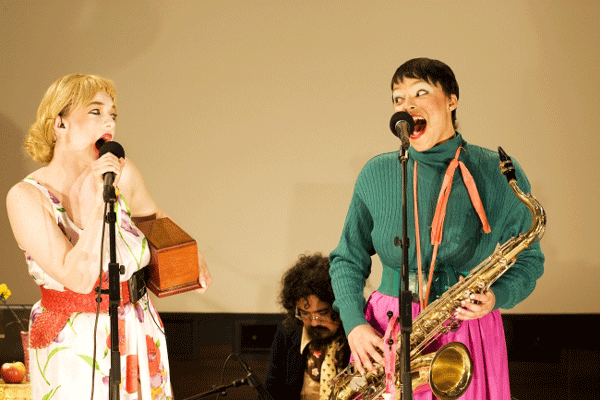
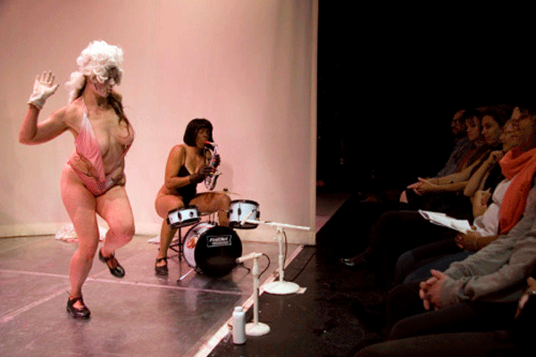
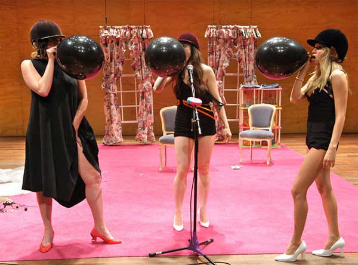

-
This Better Be Decent: Interview with Ann Liv Young
by Idiom March 5, 2010
Ann Liv Young, Snow White via reartikulacija
This past Saturday, during a performance at P.S.1., the lights were turned off on Ann Liv Young. In the interim, the internet has seen multiple accounts and opinions of the incident. Stephen Squibb caught up with the artist to discuss her work and get her side of the story.
Idiom: Let’s start at the beginning. When did you start performing?
Ann Liv Young: When I was 3. I was taking dance but hated it so I stopped and then began again when I was 7. I loved it, and knew for certain that it was what I wanted to do with the rest of my life. I was in plays, danced and I mostly made a lot of videos with my friends. I was of course the director, me being a bit bossy, fortunately my friends were good enough to still hang with me. I have videos from when I was 9, 10 where I’m really doing the same thing then as I am now, the material has just gotten a bit edgier.
Idiom: When and where was your first New York performance?
ALY: I think it was at DTW, in 2003, it was a show I made called American Crane Standards, with two women and two toilets. It was part of the Fresh Tracks series.
Idiom: I didn’t realize your work overlapped with the dance community so much.
ALY: Well it’s because I studied modern dance and, at that point, I was making shows with a lot more movement. The show consisted of two women and two toilets. The toilets were pieced together from this salvage yard. So all the parts were different, pastel colors; they were really beautiful.
It was essentially a series of movements, just the women relating to the toilets in a very basic way. There is one moment where one of the women stands on the toilet seat holding her leg way up in the air with her arm, balancing. and the other woman is balancing on her head, which is inside the toilet bowl with her legs in a split.
It’s a beautiful little show. I hope to remake it one day soon. The performers wore really polite British blouses and skirts with pleats but you were always seeing their underwear because they were going upside down a lot.
I did a Family Matters show once at DTW with the piece and one of the curators asked me to have them put on an extra set of underwear. I remember getting a good laugh out of that. Maybe we’ll re-do it with no underwear and dildos or something.
Idiom: Can you speak a bit more about the evolution of your work towards the more recent, edgier material, as you say? Was there a set of circumstances that inspired this shift?
ALY: For me everything that affects me and or affects the work inspired the shift. The shift is ongoing and continuous. In Melissa is a Bitch – my next big show at DTW – there was masturbation with turtles. The first time the curator saw the dress rehearsal she had a moment where she took me into her office and more or less directly asked for an explanation. I remember saying that I was really interested in the relationship between women and animals – hence me later doing Snow White – she didn’t really respond well. After the opening of the show, however, she apologized and showed a sincere appreciation for the work.
It’s really always been there, in the work. Even when I was little I can even remember doing somewhat provocative things. One episode comes to mind that certainly wasn’t filmed but was definitely a performance, though I guess a more site-specific, ephemeral one. My 8th grade class went on a field trip to an alligator river to go canoeing and I found a way to jump or fall into the water. I’m still not really sure which it was. I think it was pretend to fall but jump. There were alligators – not sure why 8th graders were canoeing in water with alligators but whatever – and it was such a big to-do. I then inspired many other people to jump into the water and it was mayhem. I don’t remember exactly what happened. It was like the work spread and on different field trips everyone was jumping out of their canoe.
As far as the sexual content, I believe it’s always been there. It’s just more direct with the Sherry character because it’s not set in the moment of Snow White or the era of George Washington. It’s real live present time and that is almost more provocative than a woman sticking raw pork in her vagina.
Idiom: You were performing as Sherry on Saturday; can you speak more about her?
ALY: Sherry is a character I created when I was about 4 to 5 months pregnant. I had terrible morning sickness all day and really needed just to sit down for a bit. I was touring Snow White at the time and we were in Amsterdam and I remember beginning to make a radio show which is how Sherry first came about.
I wanted a way to directly address some of the misconceptions that people have about me and the work and I figured Sherry would be the best dartboard because she can take it. She can take anything. For me she is a sort of everywoman but better. She hands you back what you hand her. After doing Sherry shows all over the world, I decided to start inviting people into my home and doing performatve couples counseling and one-on-one therapy. It’s such an amazing thing to use a character to really get close to people. People open up to Sherry, she has a magic touch.
Idiom: Before we arrive at the recent unpleasantness, what are some of the more memorable responses you’ve received in the past? I assume you’ve never had the lights turned out on you before?
ALY: I’ve had a curator tell me that the show he saw on the video is not the show I did. To which I said “Yes, because that’s a video and not a live performance.” Every show is different because it’s live and so much is based on the audience and what they give. He’s the curator of the Gender Bender festival and he’s basically the grinch. He was completely terrified of the Snow White character. I remember at one point in the show I broke a guitar over my head, saying, “This is what I think of Italians!” and I think that’s what did it. He tried to pay me for only one show or maybe not pay me at all? I can’t quite remember. I know that I had to take him to court in Italy, and it was a big pain… Fortunately our attorney loved my work and and we got our money.
My fourth grade math teacher unplugged my mic during an assembly I organized, only to plug hers in and say, “Ann Liv, this better be decent.” That’s actually what the whole P.S.1. thing reminded me of.
During Snow White, Deb(orah) Singer took me into her office once and said she didn’t like the way I was interacting with Michael (Guerrero). I kept pressing that it’s a character and the important thing for me is to make the air very tense. I wanted everyone to be uncomfortable, and of course Michael knows the ropes and he’s so subtle. He’s actually an amazing actor, better than me I think because he’s so simple in his actions. Deborah was mostly talking about me being aggressive, and how it was making it hard for their sound guy to work with me. Frankly, I was also having a hard time working with him. I wanted to run things differently than he was used to. I had wanted to sound check Smooth Criminal like 800 times and he was fed up. In any case she was annoyed and he was annoyed and it was clear but we’re used to it. The work makes people angry and sad and also, sometimes, even happy.
Speaking of sound guys, I had a huge fight on stage with one once. He actually came on stage and totally reamed me out. It was beautiful. You could tell he felt so much better after that. It was during The Bagwell in Me and I was playing Martha Washington so I stayed in character the whole time. He then quit mid-show and Michael had to run sound out of the booth. He had no idea what he was doing and it was one of my favorite shows ever.
Typically, its American curators that have given me a hard time, with the exception of the Italian guy. I’ve had to put it into my contract very clearly: this show is live, hence it being called live performance. The shows will vary night to night and will not be the same show you saw on the video.
That seems to save me. Or save them. Not sure which.
But P.S.1. was most similar to the fourth grade, elementary school experience.
Ann Liv Young, via florianschulte.at
Idiom: How did you hear about Brooklyn is Burning?
ALY: Sarvia (Jasso) contacted me and asked me to be a part of it.
Idiom: Have you worked with BiB in the past?
ALY: No. I hadn’t heard of them, but I did the show because of the audience that I thought it would draw.
Idiom: What did they provide in terms of expectations going in?
ALY: Sarvia asked me a couple times to take part. I asked about the venue, the space and sound. She gave some vague answers some specific answers. She told me up front that they couldn’t afford to pay my fee.
She asked what the show would entail and I said there would be liquid, that I would engage the audience and that the work is really based on the venue. I sent her a photo and a blurb and I asked her if she was familiar with my work. She said she saw Snow White and loved it and that she’s a big fan. I’m not quite sure if this conversation was in person or via email but she made it sound like she was quite aware of my work.
Idiom: And you never spoke to anyone from P.S.1?
ALY: Nope. I asked Sarvia at one point if we could sell DVDs outside the venue and she said that the director said no because it’s a nonprofit. I asked if we could sell them during our show and she again said that the director said no. So then I thought I’ll auction off my pan of pee as art. Maybe that’s allowed.
Of course by that point the lights were off and no one could see anything and I tripped over some cords while trying to shop my pee and it went flying all over the audience. It’s a shame you can’t see it on tape because it would have been great for Americas Funniest Home Videos.
Anyway during the show we announced that we would sell DVDs on the corner of Jackson street and even after all the mayhem we still had some fans waiting there to buy DVDs. One of them even had the pee pan. She was taking it home.
Ann Liv Young, The Bagwell in Me, via pedro antunes
Idiom: Can you take us step by step through Saturday from your perspective? Georgia (Sagri) performed…
ALY: Well it begins before that. I say so because what I’m making is hand tailored for each event/venue. I’m paying attention from the beginning. We arrived at 2 pm because that’s when we were told to arrive. The tech crew got back from lunch and we started sound check at 2:45. It was clear that the sound guy really needed another helper, that it was too much work for one person, but he did a good job, especially given that it was such a large space with bad acoustics.
After sound check we went back to get in costume. It usually takes me about an hour to get ready, to get in full makeup etc.
After we were ready, Michael and I both put on our coats and went to take a look at the other work. So we walked out and watched try cry try for a bit before going back to the dressing room. Then Andreas asked me to hurry up and head out since after Georgia’s show they were bringing all the lights up for me. He didn’t want people to leave because they thought it was over. So we went out and waited. Georgia performed for probably another 7 min while we were waiting there, standing. Georgia and the other women in her show spent much of the time saying “Where’s Georgia? Where’s Jane?” as though Georgia hadn’t shown up for her own show and Jane had taken her place, but then they started asking where Jane was too.
After she was finished we gave her a few minutes to get her things together and we walked on.
I immediately picked up the mic and began speaking. The mic was not on because the sound guy was busy underneath a table, working with some cords. I looked at him, saying, as Sherry, “I need my mic.” You could tell he was annoyed because he thought he had more time. He said to me what about the DJ.Clearly BiB was a bit disorganized in their communication. Of course this sort of mishap is not an issue for the Sherry show because it all becomes part of the performance.
After about a minute, he got my mic rolling and I did my usual “Hey ya’ll. How is everybody doing tonight? Do ya’ll know who I am?” Some people yelled, “Sherry!”
Somewhere near the beginning of the show I peed in a cake lid, because I wanted to auction it off at the end and because I had a bladder infection and was drinking tons of water and having to pee a lot.
Many, many people had walked out of gallery during Georgia’s show and I wanted to try to get them to come back in. I did say at one point “Shoot. I’ve lost my audience. That girl before me went and chased all the audience away. I don’t give a fuck where Georgia or Jane are, I hope they left.” or something to that effect.
After the initial intro I said “Now how are ya’ll liking this evening?” and people were pretty responsive. At that point I asked “How did ya’ll like the show prior to mine?” And I’m not sure what people said they just were yelling ‘yeah’ a lot. I asked if they could brain storm about it and yell out some ideas about her show. Someone yelled ‘repetitive’ another yelled “It’s art,” etc.
That’s when I said “Well I’m confused because I thought it was horrible. I thought it was just terrible.”
Then I looked at Georgia, who was sitting in front, and said “Why don’t we ask the artist what it meant?” I offered my mic toward her, and she snubbed it.
From a psychological perspective, this was very interesting to me because during sound check all of the artists were showing up one by one and walking through the space. Georgia saw my wireless mic while I was holding it, trying to correct the sound. She looked at it like it was a glowing penis or chocolate cake or something and reached for it and I handed it to her. She began speaking into as if she had never even seen a mic before. She and her friend were jokingly talking into it as if the world was hearing them speak for the first time.
To me, this was a prime example of someone yearning for a mic with nothing to say, which is what her show was to me and apparently, to Sherry too.
After I directly addressed her, asking her to explain her work, that is when people began to really be more responsive. Or, I should say, that is when Sarvia and her girlfriend began to be more responsive. At this point there was no aggression whatsoever. I confronted her in a very direct, non-aggressive way. I guess it pissed her off because when I turned back around after talking about the orca whale she was gone. People didn’t really respond to the whale discussion so I began to prepare for my first song, Amazing by Kanye West, one of the songs that I had sound checked. After starting and stopping 2 or 3 times because my monitor was not working – it wasn’t plugged in – we got the mic working and then Sarvia yelled “Come on your set is over. “
I heard that and I stopped my music. At this time I did not know it was her, I just thought it was someone yelling from the crowd. I went over to their area and I said “You wanna be a part of my show? You wanna be in this show?” After this, well we have written the text down from the video, so this is word for word what was said:
Lady (yelling): Eat my pussy bitch
Other lady (yelling) or someone close to her (yelling): Your set is over.
Sherry: You are a smart ass.
Lady (yelling): Oh oh oh shit.
Sherry (mockingly): Oh shit, look at you girl. You wanna fight? Cause I’ll rip your bloody ass right in half right in front of everybody and then we’ll have blood splattered walls. Wouldn’t that be some art. Wouldn’t that. Don’t fuck with me girlfriend. I’m in a bad mood today.After that they pretty much went quiet. That was the point where I was most verbally aggressive. It’s so fascinating for me because, at that moment, they were making themselves part of my show, essentially making my show for me and I was just the editor or the sculptor. And that is so beautiful because that is what Sherry embodies; she is a mirror that is held up for people to really take a good look at themselves. They were trying to get a rise out of me, trying to “ruin” my show. They didn’t realize that they were the show and that a Sherry show cannot be ruined. It’s just not possible.
After that I think I may have continued to try to sing and it wasn’t working because of another sound issue so then I told the audience I was sorry that I could not do that song, that it just wasn’t working.
I was about to start another song when Georgia came back in and was flicking me off with both her middle fingers. She did this for maybe 50 seconds and I kept talking to the audience, whatever I was doing. She continued so once again I stopped what I was doing and I said “Ya’ll really wanna be a part of this show don’t you?” I went over towards her, about 3 feet in front of her and I took my clothes off and my shoes off, which at this point had been on the whole time. I licked my fingers and began to touch my vagina. This is with my legs spread, again, about 3 feet in front of her. I’m not sure what was happening because I really couldn’t see. I know that a guy from try cry try got down next to me and was like yelling excitedly. Also Mariah Carey’s All I Want for Christmas is You was playing. One of my favorite songs.
After about 30 seconds of this I turned over and put my finger in my butt and did the same thing. After that I got up and got dressed and apologized to the audience. I said “I’m sorry. Oh shoot she left. I didn’t mean to make her leave. Jeez. I shouldn’t of done that. That was inappropriate… etc.” People were laughing.
After that I began to do a T.I. song that I also had sound checked and this is the point where Georgia came in screaming. “You are shit. You are shit.” Just over and over and over and over. Andreas was holding her back from what seemed like an attempt to attack me.
I just said to her, “Calm down sweetheart. Deep breath. This is performance.” I was saying this as Sherry. She just kept screaming and screaming. Then I suggested she see my therapist and that i could give her the number if she wanted before going on to talk a lot about self expression and how are museums are suppose to be havens to express yourself, etc. Again, all still in character as Sherry.
I think this is when the lights went out. Also as this point my feet were really hurting me and I knew that I had glass in them. I looked down at my legs before we lost light and I had blood running from my feet all over the floor. I looked at the floor and saw glass all over it. I had not seen it until now. Michael brought me my shoes and said “Do you see the glass? It’s been there the whole time.”
I’m not sure how it got there and I never saw it because it was brown glass on black records all over the floor. When the lights and my mic got cut, I asked a few times to turn my mic back on, but said I didn’t care about the light. I said, “I bet that little European girl went and cut my lights.” (Georgia sounds European)
They stayed off. People were yelling, “Give her light.” or “Give her her mic back.” The general feeling was that the audience was well engaged. I didn’t feel any animosity at this point because the clan had disappeared.
This is when I grabbed my pee pan and tried to yell loudly enough so that the audience could hear me, saying “Wait ya’ll wait ya’ll I’m not done.” They heard me and I told them about auctioning off my pee. I told them that it was one-thousand dollars and, that because the director Klaus said i couldn’t sell DVDs, I thought it might be nice to sell an artifact from my show. People were laughing. I was walking around in circles and whenever I would walk near audience members they would move out of the way. I had no plans to toss the pee. I’ve actually never tossed pee on an audience. I’ve wanted to, of course, but never done it. I did by accident toss pee on an old lady sleeping in Scotland in the front row. Not sure why or how she was sleeping but she was and thank heavens.
So anyway at a certain point I tripped over some cords and fell and my pee went all over people in the audience and I sliced my knee pretty bad on a piece of the beer glass. Michael sewed it up so it’s okay.
One last, important point in all of this. In the very beginning of my performance when I was expressing my distaste for Georgia’s show and I was looking for some explanation from the artist some guy in the audience yelled “This better be good,” as in, “If you’re saying hers sucked then yours better be good.” I walked right over to him and said “You know what? it’s not good and that’s why I have to insult other artists. “
Boom. There is no excuse for people not seeing the irony in this work. If they don’t they are lazy and want something to be lazy about. Georgia, in my opinion, needed something to get angry about and I gave her a reason.
I’m not interested in being a part of a community that pats everyone on the back and says “Good job!” It’s a waste of air. I don’t want to make things that are supposed to make me feel like I’m not a waste of talent or make me feel better about myself. I’m interested in challenging people, performance and social criteria in general.
It was a terrific show and I didn’t even really make it, just guided it.
Ann Liv Young, SOLO, via tanzimaugust
Idiom: Has anyone from BiB or P.S.1 contacted you since in any way?
ALY: Sarvia confronted me right after the show. She was angry but I had a hard time understanding what she was saying. I just kept saying this is live performance. I said, “You asked what I was going to do and I said I would engage the audience and there would be liquid and no one ever asked me to specify so I didn’t.”
She was unclear and not interested in standing behind the work, preferring to act offended. (Jasso’s response to the incident can be read here. -ed.) P.S.1 has never contacted me.
Andreas came to me and handed me money before I left. He was the most clear. He was polite but was obviously shaken up by the whole thing.
Sarvia called me a few days ago to again ask my feelings. I told her how I felt and she was trying to be more objective but, again, I don’t really know.
Idiom: And Morty (Diamond, the next performer) had the lights turned off on him as well, is that correct?
ALY: They stayed off and he began talking in the dark and then asked people to use their cell phones to light him. They did. The lights came back on briefly and then went out again. At that point I was nursing wounds so didn’t see it but that is what I’ve gathered from Morty’s video.
Idiom: Any response to PS1’s official statement?
ALY: Sherry responded. I really do not feel insulted or anything regarding the lights being turned off. My show continued regardless. I think Klaus is a coward. Morty said that he screamed “This has to stop.” Not sure if that is true but think he should come out of hiding and own up to his actions. Didn’t hurt me or my show. In a way he is supporting my work rather than quieting it. So thank you, Klaus.
Idiom: Any final thoughts?
ALY: I would say that people and audiences should be careful of their own perception. I think it can spin on them. I think that is what happened to Georgia. Sherry is a good person. She simply sheds light where there is very little light. Like PS1.

{kind=link}
{kind=link}
{kind=link}
{kind=link}
1 Comment
My favourite word | Karina Sarkissova
[…] This better be decent: Interview with Ann Liv Young This entry was posted in Art, Personal. Bookmark the permalink. ← my heart bleeds for excentrics. i fall in love in everyone of them […]